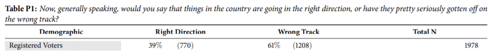

5 Chapter 5: Analyzing categorical data
5.1 Confidence intervals and hypothesis tests for proportions
At the beginning of the class we reviewed confidence intervals and hypothesis tests for means. These methods can also be used for proportions
A proportion is just a special kind of mean, where the data are all ones and zeros.
Example: 8 out of 10 people say “yes” to the question “Is politics too polarized?” Let yes = 1 and no = 0. Average is:
\[ \bar{x} = \frac{1 + 1+ 1 + 1+ 1+1+1+1+0+0}{10} = \frac{8}{10} =0.8 \]
We make confidence intervals and perform hypothesis tests for proportions using the exact same methods used for means. Only differences are:
Sampling distribution of proportions follow z, rather than t (the difference is usually trivial)
We denote the population proportion \(\pi\) and the sample proportion \(\hat{\pi}\)
Standard error of a sample proportion is \(s_{\hat{\pi}} = \sqrt{\frac{\hat{\pi}(1-\hat{\pi})}{\pi}}\)
5.1.0.1 Political polling example
Here are results from a recent political poll:
Say we want to make a confidence interval for the proportion of registered voters who say that “things in the country are going in the right direction”. Denote this population proportion \(\pi\).

\[ 95\% \text{ CI for }\pi: \hat{\pi} \pm z_{critical} *s_{\hat{\pi}} \\ = 0.39 ± 1.96 ∗ \sqrt{\frac{0.39*0.61}{1978}}\\ = 0.39 ± 0.022 \\ = (0.368, 0.412) \]
In jamovi, enter a column of frequencies for each value of the response variable, then use Frequencies / N – Outcomes or Frequencies / 2 Outcomes:
5.1.1 Toy example: skin cream and rashes
Here is an example from the 2013 paper “Motivated Reasoning and Enlightened Self Government”, by Kahan et. al.:
Putting the data into jamovi:
Analyzing the data using Frequencies / Independent Samples:
Rash is the response variable
Skin cream is the predictor variable
Frequency tells how often each combination occurred. (note: if you had raw data where each row was a single response, you would not use Freq)
Results! There’s a lot in here…
Split bar plot: displays each cell in the contingency table as a bar:
Here we can easily see that the largest number of people were those who got the skin cream and whose rash got better.
But, we can also see that rashes got better at a higher rate for those who did not get the skin cream.
We’ll cover the chi-square results soon. Right now, let’s have jamovi directly compare proportions, using Frequencies / Independent Samples:
Here, jamovi quantifies what we saw in the split bar plot: that the proportion of those who got better without the skin cream is greater than the proportion of those who got better with the skin cream:

\[ \text{"Probability of Better, given Yes" - "Probability of Better, given No" } =-0.0876 \\ P(Better|Yes) - P(Better|No) = -0.0876 \]
We also see a 95% CI for this difference, which is fairly wide and just barely excludes zero
And we see the p-value testing against:
\[ H_0:\pi_{(Better|Yes)} - \pi_{(Better|No)} = 0 \]
The two-sided p-value is 0.047, so this result is just barely significant. Woohoo!
5.2 Relative risk
Instead of knowing the difference in proportions / probabilities, we may want to know their ratio. This would tell us how many times larger one is than the other.
This is quantified by the “relative risk”, a.k.a. “risk ratio” :
\[ RR = \frac{\text{Proportion A}}{\text{Proportion B}} \]
The phrase “risk” is used because this method is popular for comparing the risk of a negative outcome under two conditions (e.g. treatment and control, or drug A and drug B)
5.2.1 Relative risk in jamovi
“Relative Risk” is an option under Comparative Measures. jamovi will give conditional probabilities based on the order of the data. Here, rash getting worse is Better is selected:
5.2.1.1 Relative risk in JMP
We see here that ùëÖùëÖ = 0.895.
Notice the 95% CI is not very wide.
We could also flip this ratio:
\[ \frac{P(Better|No)}{P(Better|Yes)} \]
Now everything is reciprocated, e.g.
\[ \frac{1}{0.809}=1.236 \]
Notice that, for “Better”, RR is small but (just barely) statistically significant, because the CI does not contain 1.
For “Worse”, RR is large but (just barely) not statistically significant, because the CI contains 1.
There is another very popular kind of ratio called an “odds ratio”, which we will consider more when we cover logistic regression.
5.3 The chi-square test
The chi-square ( \(\chi^2\)) test is a popular hypothesis test for comparing observed frequencies to expected frequencies under a null hypothesis.
The null is typically that of “independence” between two categorical variables, meaning the probability an observation falls into a category for one variable does not depend on its category for the other variable
(As a side note, \(\chi^2\) is a distribution that is used for many purposes, including modeling distributions of variances. A statistic that is distributed chi-square is not necessarily being used in the context of the chi-square test outlined here)
Staying with the skin cream example, here is the contingency table as jamovi initially reports it:
There is a lot being shown here. Top rows are observed frequencies, what jamovi calls “observed”.
The two middle rows are column % and row %.
Notice that the column %’s sum to 100% down the columns, and the row %’s sum to 100% across the rows.
We can have jamovi display the components of a chi-square test.
The first of these are the expected counts under the null hypothesis of independence.
To see how these “expected” counts would suggest independence, consider the relative risk:
\[ RR = \frac{P(Worse|No)}{P(Worse|Yes)} \\ = \frac{(\frac{28.8451}{28.8451 + 99.1549})}{(\frac{67.1549}{67.1549 + 230.845})} \\ = \frac{(\frac{28.8451}{128})}{(\frac{67.1549}{298})} \\ = \frac{0.2254}{0.2254} \\ =1 \]
5.3.0.1 Chi-square statistic
The chi-square statistic compares the expected frequencies under the null (which we denote E) to the observed frequencies in the data (which we denote O).
\[ \chi^2 = \sum\frac{(O-E)^2}{E} \]
This is a general formula that can be used when you have one variable, two variable, three variables, etc.
Most popular use is for two variables, as in this skin cream example.
Just to verify the math, here’s the chi-square calculation for the upper left cell of the table:
\[ \sum\frac{(O-E)^2}{E} = \frac{(107-99.2)^2}{230.8} + \frac{(223-230.8)^2}{230.8} + \frac{(75-67.2)^2}{67.2} + \frac{(21-28.8)^2}{28.8} =3.94 \]
And here is the jamovi output showing the full chi-square test:
(“Pearson” chi-square is the classic chi-square test)
Verifying that this chi-square statistic is indeed the sum of the chi-square values for each of the four cells:
\[ \sum\frac{(O-E)^2}{E} = 0.6207 + 2.1336 + 0.2666 + 0.9165 = 3.937 \]
The p-value is found using the appropriate degrees of freedom for the chi-square distribution. We won’t cover this part.
In this case, we see that the chi-square test just barely meets the standard for statistical significance (\(p = 0.0472\)).
This is in line with the other methods we used to analyze these data.
Recall that the test for a difference in proportions was barely significant, and the risk ratios were just on either side of significance, depending on whether “rash got worse” or “rash got better” was used as the outcome variable.
The chi-square test can be used when we have frequencies for a single variable. All we have to do is specify expected counts or probabilities.
Going back to the polling data, we can select Frequencies / N - Outcomes, and then make Answer “Variable” and Frequency “Counts”.
Suppose the null hypothesis is that equal numbers of voters feel the country is on the right vs. wrong track. Enter 0.5 for hypothesized probability:
Here we get a very large chi-square statistic and a very small p-value.
No surprise; the frequencies were very different!
My opinion on these
I personally dislike statistical tests, and I really dislike tests that don’t incorporate an interpretable statistic.
So, I am not a big fan of this chi-square test. To compare rates for categorical variables, I prefer a 95% CI around either a relative risk or a difference in proportions, whichever seems more meaning for the question at hand.
Note that a “chi-square test” is quite general; it refers to any test whose test statistic follows a chi-square distribution. So you may see “chi-square tests” that are not being used to test against a null of independence for categorical variables.
The methods we’ve covered in these notes are useful for analyzing fairly simple categorical data.
In the next set of notes, we will look at logistic regression, which is a way to use regression modeling to predict the outcome of a categorical variable.